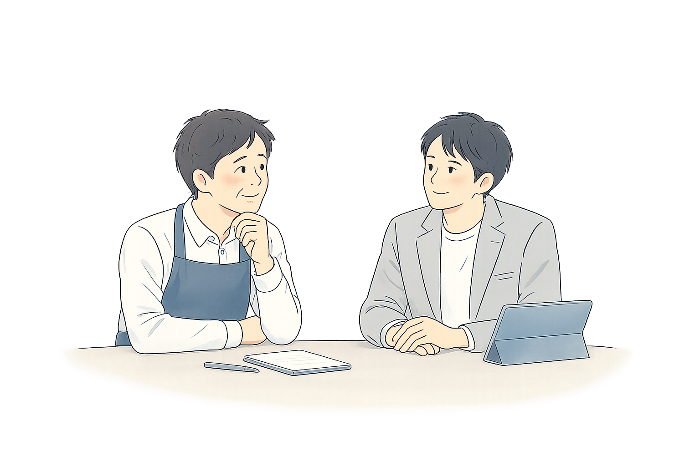

月額 / スポット
「どこから手をつければいいかわからない」という状態でも、まったく構いません。
まずは、本当に実現したいことを一緒に整理するところから始まります。
システムやツールを決める前に、解くべき課題を明らかにする。
その上で、納得して次の一手を決める。それがこの相談の使い方です。

この状態になります
本当に実現したいことが見えている
困りごとの裏にある、本質的なゴールが整理されている状態。
解くべき課題が整理されている
表面的な症状ではなく、向き合うべき課題の構造が見えている状態。
次の一手に納得して進める
費用・効果・優先順位が揃い、迷いなく動き出せる状態。
どれかひとつでも思い当たれば、相談の入口になります。
「整理できていない」「何から話せばいいかわからない」——
そんな状態でも大丈夫です。むしろ、そこから一緒に整理することが、この相談の使い方です。
まず話を聞くことから始まります。整理されていなくていい。
ヒアリング：整理されていなくてOK。「なんとなくうまくいっていない」だけでも構いません。まず話を聞きます。
実現したいことの整理：最初に相談される内容と、本当の課題が違うことがよくあります。たとえば「紙の勤怠管理が大変」という相談でも、本当の課題は「売上向上に使うべき時間が、管理業務に奪われていること」かもしれません。ゴールから遡って、解くべき問いを定めます。
解くべき課題の可視化：業務フローや関係者の認識を整理し、課題の構造を可視化します。症状ではなく、構造から見ます。
改善ロードマップ作成：ゴール・実現条件・中間目標・施策を整理し、費用感と期待効果も合わせて提示します。「何を、どの順番で、なぜやるか」が揃った状態を作ります。
次の一手を決める：「やる・やらない・後でやる」を、根拠を持って判断できる状態にします。見切り発車も、迷いによる停滞も防ぎます。
改善ロードマップを作成した後、必要に応じて小規模なPoCや簡易ツールを作成し、効果を検証することもできます。本格導入の前に、小さく試して判断するためのオプションです。
PoCや簡易ツール作成は別途費用となります。また、作成したものの長期運用はこのサービスの対象外です。
1つの課題テーマを扱います
30,000円（税込）〜 / 月
目安：1〜3ヶ月で意思決定できる状態を目指します
基本は月1回程度の打ち合わせ。必要に応じて頻度は相談可能です。
オプション（別途費用）
※内容に応じて個別お見積り
CONTACT
1つのテーマから相談できます。「こんなこと相談していいの？」と思っていても、構いません。
話しながら整理することから、始められます。初回は無料です。